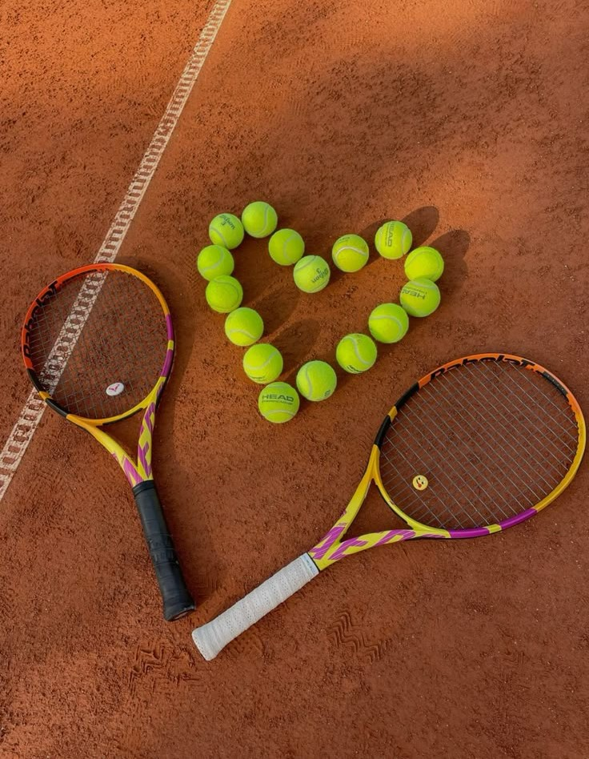

Почему я его люблю? Наверное, потому, что он – это целый мир в миниатюре, где каждый удар – маленькое сражение, а каждый гейм – отдельная история. Вроде бы, что тут особенного: мячик летает туда-сюда, два человека по разные стороны сетки пытаются перехитрить друг друга. Но на самом деле теннис – это коктейль из физической силы, интеллекта, стратегии и, конечно же, эмоций. На корте ты один на один со своими слабостями и сильными сторонами. Ну и, конечно, нельзя забывать про азарт. Теннис – это игра, где интрига сохраняется до последнего мяча. Даже проигрывая, можно переломить ход поединка и вырвать победу. Эта непредсказуемость делает теннис таким захватывающим и любимым миллионами людей по всему миру.
 Завершить сайт / Выводы